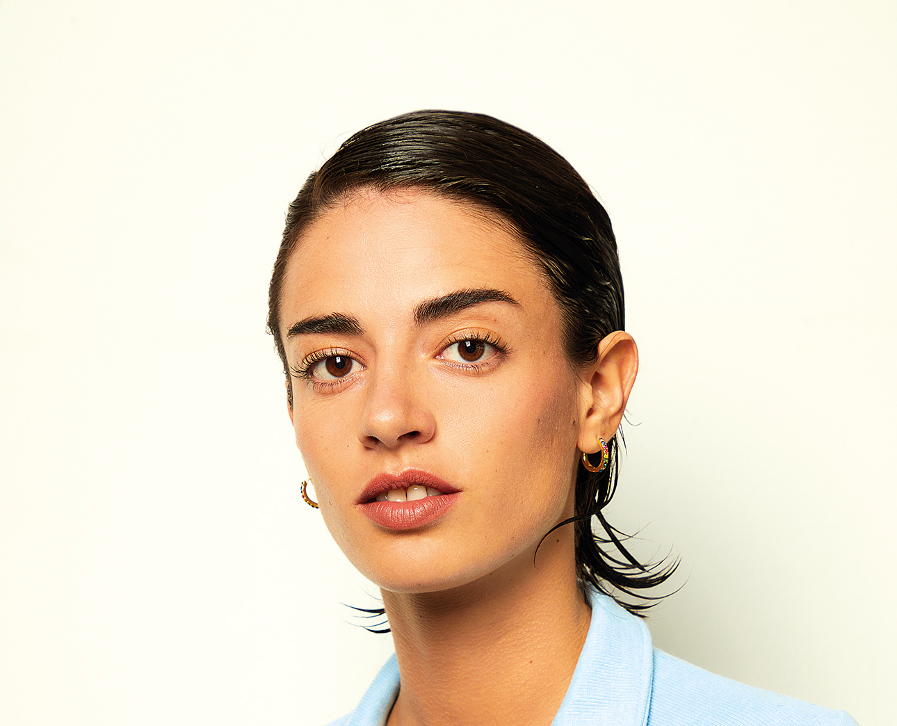

ZOE GOTUSSO
Cantante y compositora
Edad: 25
Locación: Capital Federal, Buenos Aires
Mail: zoegotusso@gmail.com
Telefono: +54 2233 445566

Edad: 25
Locación: Capital Federal, Buenos Aires
Mail: zoegotusso@gmail.com
Telefono: +54 2233 445566
Indie pop, pop rock y folk-pop
Comenzé mi carrera como parte del dúo Salvapantalles junto al músico Santi Celli en el año 2016 en Córdoba, Capital. En 2018 lanzamos álbum debut llamado SMS. En agosto del año siguiente decidimos terminar con dúo para seguir carreras solistas y realizamos una gira de despedida llamada “#HastaLuegoSalvapantallas”. Dimos nuestro último show el 2 de noviembre de 2019 en el Teatro Opera de Buenos Aires.
Zoe Gotusso y Santi Celli
2016 - 2019
SMS
#HastaLuegoSalvapantallas
En 2020 lanzé el primer senciilo de mi primer álbum como solista “Ganas”. Junto a este se sumó “Cuarto Creciente” y varios temas que reuní lanzados en 2019 como “Monoambiente en Capital”, “Un Bossa +” y “Calefón”. El 4 de diciembre se lanzé mi primer álbum “Mi primer día triste”. Asímismo, publiqué el documental “Retrato en Movimiento” sobre la grabación y producción del álbum.
Zoe Gotusso y banda instrumental
2020
Mi primer día triste
Ganas Tour (2022) - Argentina, Colombia, España, Mexico, Chile, Ururguay, Perú y Estados Unidos
En 2022 participé como telonera de los 10 recitales, y su transmición mundial, de la banda inglesa Coldplay en el estadio Momumental de River Plate.
He trabajado en conjunto con Nike, Levis, Budweiser, Corona, Jazmin Chebar, entre otras, para formar parte de sus campañas o acciones más relevantes. En especial, fui elegida por Spotify para representar su programa EQUAL que busca empoderar e inspirarse entre mujeres.
SMS - Salvapantallas (2019):
Mejor artista nuevo (nominación)
Mejor albúm grupo pop (nominación)
Mejor artista nuevo (nominación)
Mejor albúm artista pop (ganadora)
Mejor nuevo artista (nominación)
Mejor canción pop/rock (nominación)